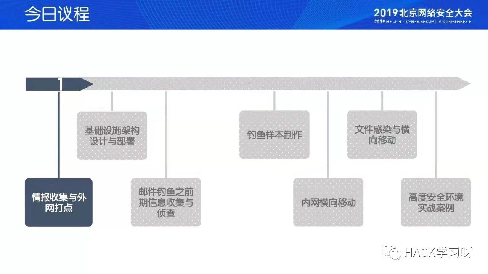
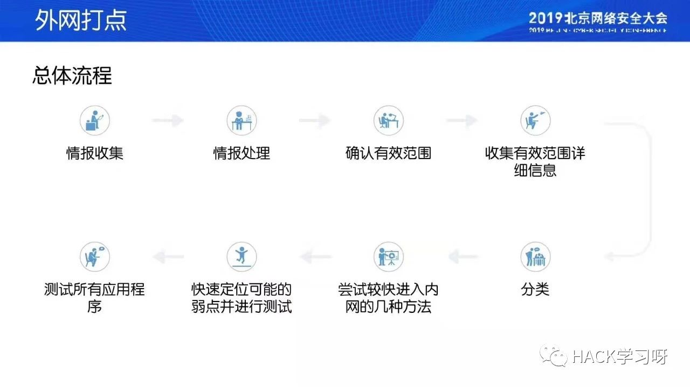
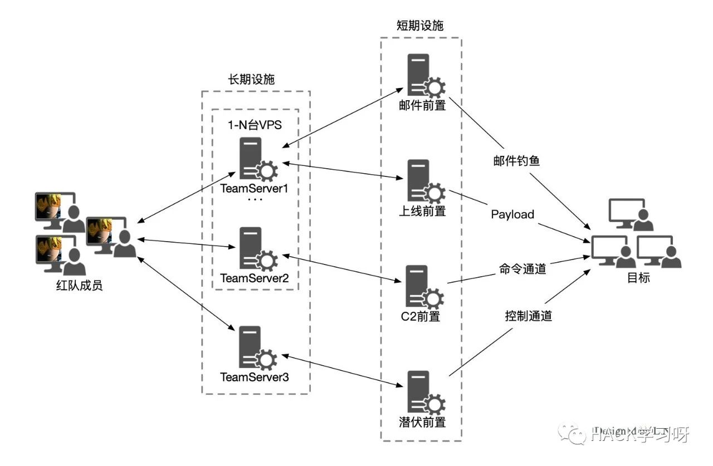
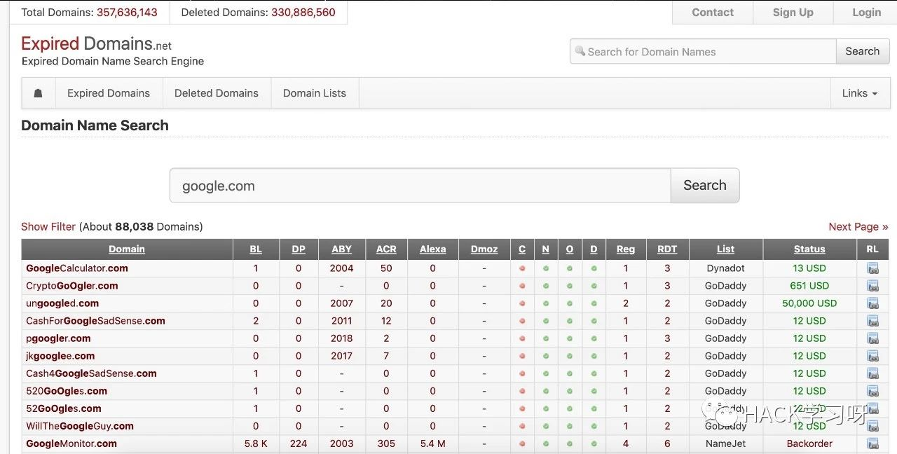
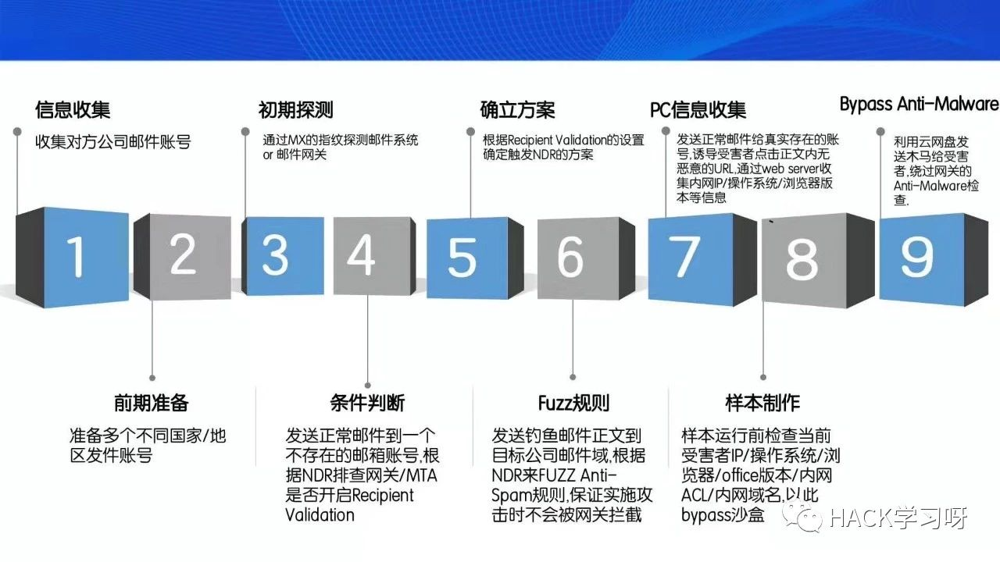

红队之外网定向打点
0x00 什么是红队
红队，一般是指网络实战攻防演习中的攻击一方。
红队一般会针对目标系统、人员、软件、硬件和设备同时执行的多角度、混合、对抗性的模拟攻击；通过实现系统提权、控制业务、获取数据等目标，来发现系统、技术、人员和基础架构中存在的网络安全隐患或薄弱环节。
红队人员并不是一般意义上的电脑黑客。因为黑客往往以攻破系统，获取利益为目标；而红队则是以发现系统薄弱环节，提升系统安全性为目标。此外，对于一般的黑客来说，只要发现某一种攻击方法可以有效地达成目标，通常就没有必要再去尝试其他的攻击方法和途径；但红队的目标则是要尽可能地找出系统中存在的所有安全问题，因此往往会穷尽已知的“所有”方法来完成攻击。换句话说，红队人员需要的是全面的攻防能力，而不仅仅是一两招很牛的黑客技术。
红队的工作也与业界熟知的渗透测试有所区别。渗透测试通常是按照规范技术流程对目标系统进行的安全性测试；而红队攻击一般只限定攻击范围和攻击时段，对具体的攻击方法则没有太多限制。渗透测试过程一般只要验证漏洞的存在即可，而红队攻击则要求实际获取系统权限或系统数据。此外，渗透测试一般都会明确要求禁止使用社工手段（通过对人的诱导、欺骗等方法完成攻击），而红队则可以在一定范围内使用社工手段。
还有一点必须说明:虽然实战攻防演习过程中通常不会严格限定红队的攻击手法，但所有技术的使用，目标的达成，也必须严格遵守国家相关的法律和法规。
在演习实践中，红队通常会以3人为一个战斗小组，1人为组长。组长通常是红队中综合能力最强的人，需要较强的组织意识、应变能力和丰富的实战经验。而2名组员则往往需要各有所长，具备边界突破、横向移动（利用一台受控设备攻击其他相邻设备）、情报收集或武器制作等某一方面或几个方面的专长。
红队工作对其成员的能力要求往往是综合性的、全面性的。红队成员不仅要会熟练使用各种黑客工具、分析工具，还要熟知目标系统及其安全配置，并具备一定的代码开发能力，以便应对特殊问题。
0X02 红队之外网定向打点
Summary

情报收集与外网打点
因为起晚了..第一个议题没听着，有点遗憾，补张图

基础设施架构设计部署
普通架构：红队人员--》teamserver cs--》目标机 缺点：功能未分离、无潜伏通道、回连日志多、灵活性较低
演进架构：DNS/HTTP/HTTPS分离server tips：1~2cpu 2G内存 10G硬盘，回连数不超过5台，潜伏通道（根据实际目标环境优先）
完整架构：域名和IP（VPS）teamserver（CS）前置机（redictor） CS -》teamservers 1/2/3/... 前置层（SMTP/PAYLOAD/C2/隐蔽C2）

选择域名

抢注过期域名 expireddomains.net DELETE DOMAIN
tips1: 不要包含世界大厂和杀毒厂商相关的域名，以及和目标相关的域名
tips2：注册目标相关区域常见的域名，记得开隐私保护
其他：www.freshdrop.com www.domcop.com
tips3：检查域名是否被分类，金融、医疗、电商、航空、旅游 great
tips4：去VT、微步检查，域名是否被标黑
tips5：举报滥用规则仔细阅读（freenom 慎用）
培养域名（养号）
搭建正常域名，提交至各安全厂商给站点分类
tips1：把域名A记录解析到大厂ip，使用时候再解析到C2，不用时候解析回大厂ip
tips2：VT 自评， alex 自评
域名解析检测
域名分类检测
domaincheck：
IP检测
外网IP，通过情报站看是否被标黑
使用CDN隐藏真实IP（部分安全厂商会拦截CDN IP）
借鸡生蛋，
subdomain takeover：高信誉域名A解析B -》
高信誉肉鸡做前置转发
C2工具
自定义流量特征：DNS/HTTP/HTTPS/SMB和TCP
Payload加载流程：shellcode/Loader/Stageless/beacon
DNS：如果用到dns通道默认参数必须修改（容易被设备检测），不要用DNS做数据通道
HTTP（S）：不要在uri中的文件后缀设置js、css等静态文件，效果：付费证书>免费证书>自签名证书 （Let's Encrypt 免费 3个月过期，开自动续）
CS 3.14
Redirector
Office365、Pastebin、Slack、Facebook、Dropbox、Gmail、Twitter..
缺点：需要硬编码到第三方服务
第三方服务用作C2相关资源汇总
https://pentestarmoury.com/2017/07/19/s3-buckets-for-good-and-evil/
https://rhinosecuritylabs.com/aws/hiding-cloudcobalt-strike-beacon-c2-using-amazon-apis/
https://github.com/daniel-infosec/wikipedia-c2
https://unit42.paloaltonetworks.com/aggah-campaign-bit-ly-blogspot-and-pastebin-used-for-c2-in-large-scale-campaign
https://www.harmj0y.net/blog/powershell/command-and-control-using-active-directory/
https://blog.netspi.com/databases-and-clouds-sql-server-as-a-c2/
https://outflank.nl/blog/2017/09/17/blogpost-cobalt-strike-over-external-c2-beacon-home-in-the-most-obscure-ways
https://labs.mwrinfosecurity.com/blog/tasking-office-365-for-cobalt-strike-c2
https://github.com/maldevel/canisrufus
https://unit42.paloaltonetworks.com/darkhydrus-delivers-new-trojan-that-can-use-google-drive-for-c2-communications
https://github.com/byt3bl33d3r/gcat
https://github.com/maldevel/gdog
https://www.welivesecurity.com/wp-content/uploads/2019/05/ESET-LightNeuron.pdf
https://github.com/bkup/SlackShell https://github.com/j3ssie/c2s
https://github.com/praetorian-code/slack-c2bot
https://github.com/microsoft/skype-dev-bots
https://github.com/PaulSec/twittor
https://blog.talosintelligence.com/2017/04/introducing-rokrat.html
https://www2.fireeye.com/rs/848-DID-242/images/rpt-apt29-hammertoss.pdf
https://github.com/woj-ciech/Social-media-c2
Google App Engine| Amazon |Azure|Aliyun CDN
可见层：DNS、TLS
不可见层：HTTPS
URL（高信誉） SNI（高信誉） HOST(C2)
https://github.com/vysecurity/DomainFrontingLists
代替方案：HTTP pipelining（ >http 1.1 ）
和 domain fronting 效果相同
利用同一个tcp连接发送不同的host的http包
tips：good domain + bad domain 包一层同时发过去
建议使用多个判断过来请求，拒绝使用默认uri，对抗全网C2扫描
仅允许目标相关IP访问，对抗云沙盒
限定访问时间段，只在某个时间段请求payload
不要把非payload的uri重定向到google等高信誉域名
建议：在www.aaa.com搭建来养域名，使用c2.aaa.com的二级域名做C2
DNS socat|iptables|ssh（tmux和screen选一个）
Apache|Nginx
Tips：
Domain Fronting（隐藏IP、域名的方式）
第三方服务用作C2
邮件钓鱼（SMTP）
域名：同C2域名选择
高信誉的邮件发送者：Mailchimp、Sendgrid
正确配置SPF、DKIM\DMARC
SSL证书
发送时间和频率
一键部署
钓鱼邮件框架：Gophish (https://github.com/gophish/gophish)
隐蔽性和安全性
解决方案：V2ray + Nginx + CLoudflare + Freenom+ Websocket 搭建代理
权限最小化：使用iptalbes限定组件通讯，SSH进行端口转发
Teamserver：限制端口只能本地访问，限制beacon监听端口只能redirector访问
Tips：VPS容易被GFW拦截？
基础设施监控系统
记录完整日志，设置告警
自动化部署 LuWu（https://github.com/QAX-A-Team/LuWu）
日志中心
邮件钓鱼之前期信息收集与侦查
面临的技术挑战：
邮件网关 mail gateway
浏览器
EDR、IDS
Mail Gateway
通过上述结论，探测，fuzzing ANTI-SPAM 引擎规则
稳定触发NDR的办法：
正文大于10M
收件人超过5000个
邮件退信默认开启
MTA默认不开启 Recipient Validation
SPF
DKIM
新注册域名
生僻域名后缀
敏感关键字
ANTI-SPAM
特性：
结论：当我们发送一封钓鱼邮件给一个不存在的邮箱账户时，如果能收到NDR，证明钓鱼邮件通过了邮件网关安全审查（BACKSCATTER ATTACK）
BYPASS ANTI-SPAM
BYPASS ANTI-MALWARE
NDR
总结

钓鱼样本制作
钓鱼邮件类型
恶意的chm文档：利用easy，但目前比较难过杀软，免杀效果差
带有恶意宏代码的office文档：易于混淆（结合图片模糊之类），但需要手动开宏，进程链可疑
白加黑钓鱼：利用带签名的白程序，通过DLL劫持的方案加载恶意DLL；比较容易过AV，但需要解压执行
LNK文件钓鱼：链接对象是Powershell，进程链完善
PPT钓鱼样本：PPT超链接，弹出“安全声明”，不用启动宏，但必须全屏播放，启用才执行；不推荐使用
漏洞利用的钓鱼邮件：效率高，同样成本也高
写工具自动化生成恶意lnk，关键函数：
IShellLink::SetIconLocation()
IShellLink::SetShowCmd() 窗口显示
IShellLink::SetArguments()
IShellLink::SetPath()
...
LNK钓鱼邮件制作
短文件名 POWERS~1.EXE
代码混淆 参考赛门铁克的paper
安全类进程检测
遍历进程，获取进程对应的版权信息，与黑名单列表比对
优点：升级版本也不变，通用
进程名检测
窗口标题检测
虚拟机-取证工具-杀软检测-调试器
常规手法
新姿势
如何根据PID获取进程的全路径：ProcessExplorer
x86不太可行，x64可以
绕过PCHunter 0RING hook
检测后行为，通知攻击者，及时善后处理
联网下载Word文档
本地释放Word文档
协议内容还原：tcp、http、smtp
文件内容还原：office、pdf、zip
加壳程序还原：upx
加密算法数据还原：base64
(New-Object System.Net.WebClient).DownloadFile(url, file_path);
数据还原引擎
尾部可以追加任意大小的word、PE、PowerShell
select -last 1 定位到最后一个对象，以“\n”划分对象
select -index 1 也可以
ARGUMENT用于LNK中存储命令行参数
StringData结构，CountCharacters
IShellLink::SetArguments()
塞入数据的最大值是 explorer.exe 对命令行参数长度的限制
实测得出 0x7FC2（31KB）
将Word塞到COMMAND_LINE_ARGUMENTS
将Word塞到lnk文件的尾部（推荐使用）
钓鱼简历的编写：内容可选浮夸，让HR打开看完后大概率删除，防止提给技术人员
LNK图标的显示：改成各个系统都能默认显示的通用图标
如何隐藏行为：SetShowCmd() 最小化窗口
Word文档存放：
杀软对抗
内网横向移动
内网侦查
主动扫描
被动搜集
雷区警示
方法对比
设备资产识别
可用服务采集
脚本检测
监听广播消息
风险面：Network ACL封锁、受控主机HIDS、HoneyPot、NIDS
经典主被动内网侦查方式
域内信息侦查 * 类域 * *nix * Windows AD
DNS排查
LDAP（S）& GC（S）
查询LDAP（S）服务
Kerberos
HUNT DOMAIN ADMIN
Scan UDP/53
Query DNS FQDN from DNS
Query Locators from DNS
扫描端口，利用特性筛查域名
匿名读取部分LDAP元数据
读取LDAP证书信息
GC服务 查询 TCP/3268 TCP/3269
防御：可以关闭匿名绑定
ADexplorer：GUI，一些cmdlet
Get-ADUser
Powerview：大量cmdlet
服务票据
Service Ticket
结论：普通域账号申请服务票据后可以对账号离线破解
KERBEROAST攻击（基于上述结论）
Rubeus.exe
PowerView
Session Key，使用用户的NTHASH加密
John/HashCat 可以进行离线破解
KERBEROSUSERENUM（a-team github）
MSF模块
AS-REQ & AS-REP
KDC TGT票据
基于AS协议的用户枚举
ASREPROAST
SPN（Service Principal Name）域对象的属性，对象是机器/用户，必须设置
TGS-REQ & TGS-REP
远程会话枚举
远程用户枚举
远程登录枚举
NetSessionEnum（SMB会话）
NetWkstaUserEnum（交互登录会话）新版本系统需要 admin privilige
场景：一些同域管理账号同名的本地账号可能是同一人创建
SAMR 查询组和成员信息（注：Win 10后没有admin无法枚举）
LSARPC 查询SID相关
交互式登陆：主要指Console和RDP登陆的方式
特定用户登录会话
获取主机权限：Vul RBCD & RPRN
提取遗留的凭据: Powerview Mimikatz
得到用户权限
时间服务器
DNS服务器
域控定位器
net time /domain
w32tm /query
Get-DnsClientServerAddress 查询本机 DNS SERVER 设置
向DNS server 查询 Domain Name A记录对应地址
nltest 提取域控信息的过程
net
dsquery 通过对LDAP进行查询
DC Locator Process
产生DNS查询，沿用DC Locator的机制很安全
Kerberos认证，KDC
GC
查询工具
dsquery/ADSISearcher使用明文的LDAP协议，容易被IDS捕获
定位域控（域内主机）
定位域控（域外主机）
横向移动
概念：是一种让服务有能力以来访用户身份访问其他服务的认证机制
无限制委派：default设置仅域控可以无限制委派
约束委派
基于资源的委派（RBCD） 目前杀伤力最大的委派
S4U2SELF
PRINTER BUG：Printer Spooler服务SSRF
无限制委派+S4U2SELF+PRINTER 任意域控
S4U2PROXY
继承S4U2SELF、S4U2PROXY
WMI：基于DCOM TCP/135 明文传输
PSEXEC：（tips：使用impacket工具 psexec.py 区别在于目标支持SMB3.0默认开启加密）
远程计划任务
DCOM：远程调用的COM组件 TCP/445 + Random port dcomexec.py
MS-RPC
Kerberos委派
域权限维持
SPN
黄金票据
白银票据
受限委派
RBCD
域组策略
LAPS
针对账户进行，参考前面
krbtgt key，修改krbtgt密码两次，分析4769日志
日志分析
IDS规则，过期时间，算法等
用krbtgt加密TGT，TGT加密使用该账户的key作为密钥
使用默认参数创建的金票过期时间很长，mimikatz
DCSync拉取域内账户的hash/key
检测点：
PAC信息验证
SRVS的相关key加密
检测点：
主机权限维持（常见类型，不展开）
域权限维持
文件感染与横向移动
文件感染
修改文件关联
.docm 改为.doc，对抗针对后缀.docm 的检测
修改宏关联文件，对抗依赖文件名or类型检测
.docx .docm（宏文件） 可以改为 .doc
目标：把.docx转换为带恶意宏的.docm或.doc
图标如何保持不变？
恶意代码正常拉起原程序
场景：权限维持、横向移动
IShellLink::SetIconLocation()把exe设置为当前lnk的图标
借助rundll32.exe
TLS回调，反调试；把恶意代码放在TLS，不需要修改OEP
TLS数据结构
TLS感染总体流程：搜寻节间隙 - 修改录数据目 - 构建TLS目录 TLS回调函数 - 重建PE - 恶意文件释放
给exe添加一个导入函数，DllMain中写恶意代码，工具StudyPE
把恶意代码插入到PE中，修改OEP，重建PE
对抗思路
OEP内某处跳转到恶意代码
修改OEP指向恶意代码
DLL加载
OEP jump
利用TLS（线程局部存储）回调
PE感染
LNK感染
Office感染
公司软件库供应链，类似“驱动人生”
感染远程共享文件
外界设备感染，如U盘、移动硬盘
3389挂载盘到服务器
邮件感染，插入恶意宏
流量劫持，感染传输中的文件
意义
场景
方式
常规PE感染
TLS感染
LNK文件
Office文件感染
杀软对抗

来源：Github&嘶吼专业版
作者：Mel0day
Powered by QAX A-TEAM
点击阅读原文，即可跳转
如有侵权，请联系删除